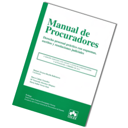

Manual de Procuradores. Derecho Procesal práctico con esquemas, escritos y resoluciones judiciales.
Libro:
Manual de Procuradores. Derecho Procesal práctico con esquemas, escritos y resoluciones judiciales.
2º edición, Editorial Colex, 2012.
Autores:
Manuel Alvarez-Buylla Ballesteros (coordinador), Marco Labajo González, Mª Fuencisla Martínez Minguez y María Isabel Torres Ruiz
Categoría:
Derecho procesal práctico para profesionales
Después del éxito de la 1ª edición, reimprimida en dos ocasiones, sale a la venta la segunda edición del Manual de Procuradores, actualizada a febrero de 2012 y ampliada con los temas referentes a la utilización de Lexnet y a la práctica de los actos de comunicación por Procuradores.
En esta edición se adaptan los contenidos del libro a todas las reformas procesales de estos últimos años, entre otras, las reformas procesales contenidas en la Ley 13/09 de la oficina judicial con el traspaso de competencias y recursos a los secretarios judiciales, así como las modificaciones operadas por la Ley 37/11 de agilización procesal que ha introducido importantes reformas en el iter procesal de varios procedimientos y recursos, igualmente a la nueva Ley Concursal y la Ley de la Jurisdicción Social, por lo que la presente obra está completamente actualizada al día de hoy.
La obra se divide en cuatro bloques: el primero nos introduce en las funciones públicas y privadas de los procuradores y en el acceso a la profesión así como en las normas que regulan el turno de oficio y la deontología profesional, y su organización colegial. El segundo, y más extenso, lo constituye un tratado de derecho procesal práctico ordenado por los cuatro órdenes judiciales, incluido el derecho concursal, y que contiene los procedimientos y recursos previstos en las leyes, con especial consideración a los procedimientos ejecutivos. El tercer bloque se dedica a la correcta minutación de los procuradores, con la adecuada aplicación del Arancel vigente; en el Cuarto y último, se ofrecen una selección de escritos de utilidad para el procurador.
Sólo nos resta desear que esta nueva edición sea merecedora nuevamente de la confianza de los juristas que ejerzan o deseen ejercer nuestra profesión de Procurador y además, de todos los profesionales del derecho, estudiantes, y funcionarios que trabajen al servicio de la Administración de Justicia, al poder encontrar en él una visión práctica, que es explicado gráficamente con la ayuda de esquemas y el desarrollo completo de los procesos con escritos y resoluciones judiciales extraídas de procedimientos reales.